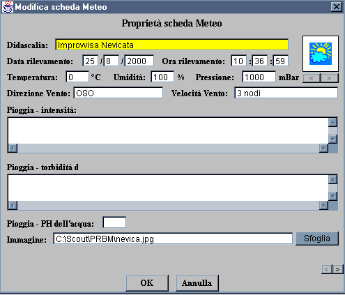
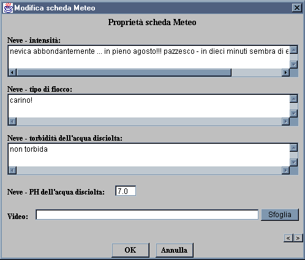
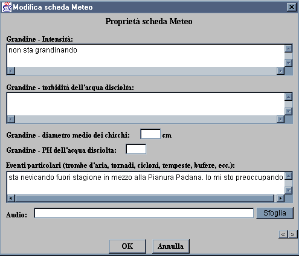
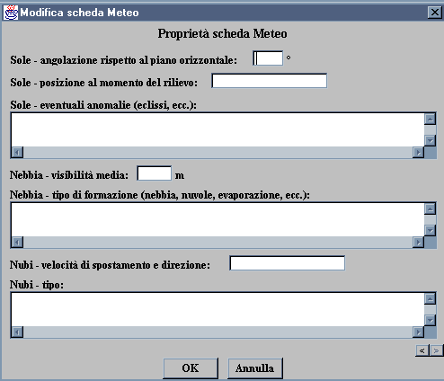
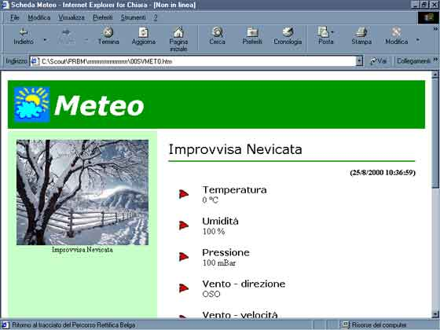

| Principale | Schede | Menu | Multimedia | PRB | Raccoglitore | Indice | Credits |
|
|
|
Scheda Meteo La scheda Meteo integra il PRB con la descrizione del tempo atmosferico presente in quel momento. Potrebbe essere inserito nel PRB per esempio quando si trova una colonnina metereologica con le indicazioni di umidità e pressione lungo il tragitto per esempio. Qui di seguito ci sono le istruzioni per completare la scheda nel modo giusto:  Didascalia: Definire un nome per il tempoche sarà così più facilmente identificabile all'interno del programma; Data/Ora: Data e ora del rilevamento; Icona: Scegliere l'icona più appropriata al tempo descritto tramite le freccette poste appena al di sotto dell'iconcina; Temperatura: Immetterela temperatura in gradi Celsius; Umidità: Inserire la percentuale di umidità presente nell'aria; Pressione: Inserire la pressione in millibar; Direzione e velocità del vento: Inserire la direzione e la velocità del vento, misurati per esempio con una manica a vento; Pioggia: intensità, torbidità e PH: Inserire i dati relativi al campione di pioggia raccolto (se piove); Immagine: Inserire il nome dell'immagine relativa al tempo atmosferico se presente, oppure selezionarla tramite il tasto Sfoglia;
Ricordati che puoi spostarti all'interno delle sezioni della scheda grazie ai due tastini in fondo a destra 
Neve: intensità, tipo di fiocco e torbidità e PH dell'acqua discolta: Inserire i dati relativi alla nevicata così come si presentano. Video: Inserire il nome del video se presente, scrivendolo a mano oppure selezionandolo tramite il tasto Sfoglia.

Grandine: intensità, tipo di fiocco e torbidità e PH dell'acqua discolta: Inserire i dati relativi alla grandinata così come si presentano. Eventi particolari: Immettere informazioni rispetto all'evento che si sta osservando. Se ci coglie un improvvisa nevicata in pieno agosto per esempio è un evento da registrarsi come molto particolare. Audio: Se si hanno suoni (formato WAV, MP3, o qualsiasi Real Audio) relativi all'evento (rumore della pioggia, tuoni, rumore del vento) registrati lungo il percorso, qui si può selezionarli per far sì che alla presentazione finale in HTML il programma crei un collegamento ipertestuale per ascoltarli.

Sole: angolazione e posizione: Inserire i dati relativi all'angolazione del sole in gradi rispetto al piano orizzontale della terra e alla posizione geoceleste al momento della rilevazione. Eventuali anomalie del Sole: Questo campo si può completare con considerazioni relative ad anomalie solari come eclissi, macchie solari e così via. Nebbia: visibilità media e tipo di formazione: Inserire la visibilità media in metri ed il tipo di formazione riscontrata, se nebbia, foschia o evaporazione, nuvole basse, nebbia a banchi, etc.. Nubi: velocità di spostamento e direzione e tipo di nubi: Inserire la velocità approssimativa delle nubi e la loro direzione rispetto al Nord. Nel tipo di nubi inserire i tipo di nubi osservate: cirri, nembi, cumuli, etc.. Ecco come si presenterà la pagina che verrà creata da questa scheda:  |